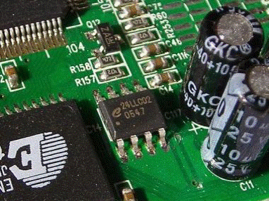
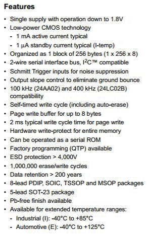
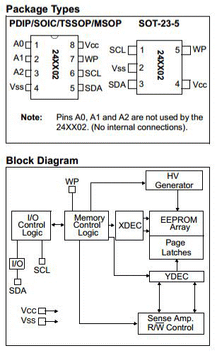
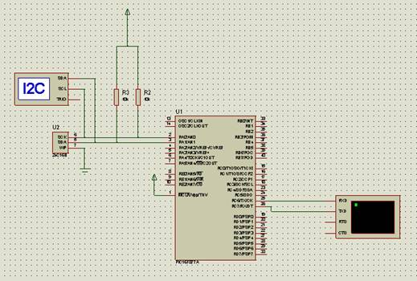
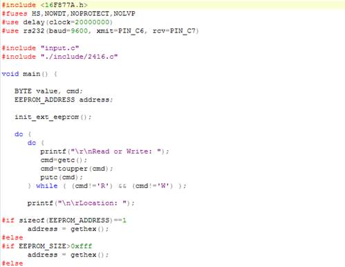
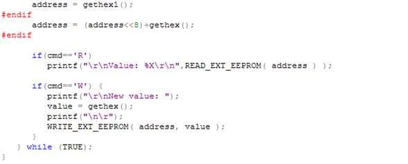
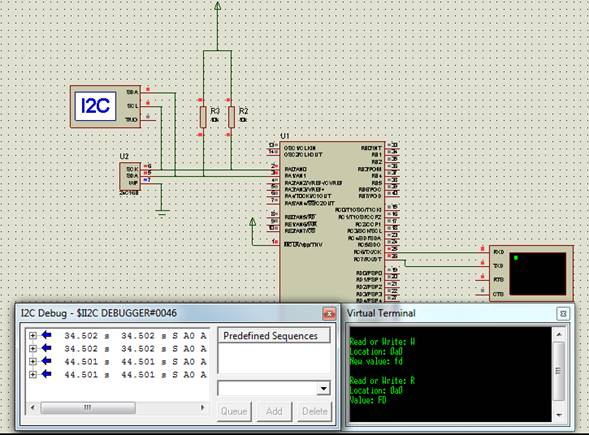
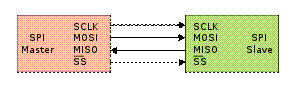
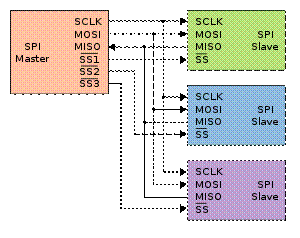

Aplicaciones
I2C:
I²C es un bus de comunicaciones en serie. Su nombre viene de Inter-Integrated Circuit (Circuitos Inter-Integrados). La versión 1.0 data del año 1992 y la versión 2.1 del año 2000, su diseñador es Philips. La velocidad es de 100Kbits por segundo en el modo estándar, aunque también permite velocidades de 3.4 Mbit/s. Es un bus muy usado en la industria, principalmente para comunicar microntroladores y sus periféricos en sistemas integrados (Embedded Systems) y generalizando más para comunicar circuitos integrados entre si que normalmente residen en un mismo circuito impreso.
La principal característica de I²C es que utiliza dos líneas para transmitir la información: una para los datos y por otra la señal de reloj. También es necesaria una tercera línea, pero esta sólo es la referencia (masa). Como suelen comunicarse circuitos en una misma placa que comparten una misma masa esta tercera línea no suele ser necesaria.
Las líneas se llaman:
SDA: datos
SCL: reloj
GND: tierra
Las dos primeras líneas son drenador abierto, por lo que necesitan resistencias de pull-up.
Los dispositivos conectados al bus I²C tienen una dirección única para cada uno. También pueden ser maestros o esclavos. El dispositivo maestro inicia la transferencia de datos y además genera la señal de reloj, pero no es necesario que el maestro sea siempre el mismo dispositivo, esta característica se la pueden ir pasando los dispositivos que tengan esa capacidad. Esta característica hace que al bus I²C se le denomine bus multimaestro.
Las transacciones en el bus I2C tienen este formato:
| start | A7 A6 A5 A4 A3 A2 A1 | R/W | ACK | ... DATA ... | ACK | stop | idle |
- El bus esta libre cuando SDA y SCL están en estado lógico alto.
- En estado bus libre, cualquier dispositivo puede ocupar el bus I²C como maestro.
- El maestro comienza la comunicación enviando un patrón llamado "start condition". Esto alerta a los dispositivos esclavos, poniéndolos a la espera de una transacción.
- El maestro se dirige al dispositivo con el que quiere hablar, enviando un byte que contiene los siete bits (A7-A1) que componen la dirección del dispositivo esclavo con el que se quiere comunicar, y el octavo bit (A0) de menor peso se corresponde con la operación deseada (L/E), lectura=1 (recibir del esclavo) y escritura=0 (enviar al esclavo).
- La dirección enviada es comparada por cada esclavo del bus con su propia dirección, si ambas coinciden, el esclavo se considera direccionado como esclavo-transmisor o esclavo receptor dependiendo del bit R/W.
- El esclavo responde enviando un bit de ACK que le indica al dispositivo maestro que el esclavo reconoce la solicitud y está en condiciones de comunicarse.
- Seguidamente comienza el intercambio de información entre los dispositivos.
- El maestro envía la dirección del registro interno del dispositivo que se desea leer o escribir.
- El esclavo responde con otro bit de ACK
- Ahora el maestro puede empezar a leer o escribir bytes de datos. Todos los bytes de datos deben constar de 8 bits, el número máximo de bytes que pueden ser enviados en una transmisión no está restringido, siendo el esclavo quien fija esta cantidad de acuerdo a sus características.
- Cada byte leido/escrito por el maestro debe ser obligatoriamente reconocido por un bit de ACK por el dispositivo maestro/esclavo.
- Se repiten los 2 pasos anteriores hasta finalizar la comunicación entre maestro y esclavo.
- Aun cuando el maestro siempre controla el estado de la línea del reloj, un esclavo de baja velocidad o que deba detener la transferencia de datos mientras efectúa otra función, puede forzar la línea SCL a nivel bajo. Esto hace que el maestro entre en un estado de espera, durante el cual, no transmite información esperando a que el esclavo esté listo para continuar la transferencia en el punto donde había sido detenida.
- Cuando la comunicación finaliza, el maestro transmite una "stop condition" para dejar libre el bus.
- Después de la "stop condition", es obligatorio para el bus estar idle durante unos
microsegundos. El código del kernel de Linux para el soporte I2C está separado en varias piezas lógicas:
- I2C chip driver (maneja uno de los chips conectados al bus I2C, tanto si se comporta como maestro o como esclavo)
- I2C bus driver
- I2C algorithm driver
- I2C core (la parte genérica del subsistema de I2C)
*extraído de http://es.wikipedia.org/wiki/I%C2%B2C
Un ejemplo de dispositivo que hace uso de ésta interfaz son las memorias EEPROM I2C, las cuales han ganado poco a poco un espacio en el hardware de los equipos electrónicos hasta transformarse en uno de los medios de almacenamiento de información más populares por su practicidad y sencillez de manejo. Tener la posibilidad de almacenar datos de diversa índole en una memoria no volátil, es una característica importante de los equipos que les permite la desconexión prolongada de cualquier suministro energético y conservar durante mucho tiempo información valiosa que de otro modo, se perdería al desconectar un sistema. También conocidas como memorias de protocolo “serie” las 24CXX son infaltables en cualquier equipo electrónico de consumo masivo.
Algunas de las características dignas de mencionar, pueden ser las que a continuación enumeramos:
- Pueden ser escritas y borradas de forma eléctrica = Electrically Erasable Programable Read Only Memory
- Están garantizadas para 1 millón de ciclos de escritura/lectura.
- Pueden llegar a retener la información sin ser alimentadas durante cientos de años.
- Se organizan por páginas para facilitar su direccionamiento y almacenamiento de la información.
- Utilizan para su funcionamiento una tensión única (5Volts o 3,3Volts)
- Son compatibles con el protocolo serial I2C (Marca registrada de Philips)
- Bajísimo costo.
- Amplia variedad de encapsulados para adaptar el modelo necesario, de acuerdo al tamaño de la aplicación.

Veamos las características de una de éstas memorias:


Veamos una aplicación con un ejemplo:

Vamos a copiar el siguiente código ejemplo que nos proporciona el compilador:


Comprobamos los parámetros de comunicación de los dispositivos en simulación, verificando con la herramienta I2C debugger:

Serial Peripheral Interface
El Bus SPI (del inglés Serial Peripheral Interface) es un estándar de comunicaciones, usado principalmente para la transferencia de información entre circuitos integrados en equipos electrónicos. El bus de interfaz de periféricos serie o bus SPI es un estándar para controlar casi cualquier dispositivo electrónico digital que acepte un flujo de bits serie regulado por un reloj.
Incluye una línea de reloj, dato entrante, dato saliente y un pin de chip select, que conecta o desconecta la operación del dispositivo con el que uno desea comunicarse. De esta forma, este estándar permite multiplexar las líneas de reloj.
Muchos sistemas digitales tienen periféricos que necesitan existir pero no ser rápidos. La ventajas de un bus serie es que minimiza el número de conductores, pines y el tamaño del circuito integrado. Esto reduce el coste de fabricar montar y probar la electrónica. Un bus de periféricos serie es la opción más flexible cuando se tiene tipos diferentes de periféricos serie. El hardware consiste en señales de reloj, data in, data out y chip select para cada circuito integrado que tiene que ser controlado. Casi cualquier dispositivo digital puede ser controlado con esta combinación de señales. Los dispositivos se diferencian en un número predecible de formas. Unos leen el dato cuando el reloj sube otros cuando el reloj baja. Algunos lo leen en el flanco de subida del reloj y otros en el flanco de bajada. Escribir es casi siempre en la dirección opuesta de la dirección de movimiento del reloj. Algunos dispositivos tienen dos relojes. Uno para capturar o mostrar los datos y el otro para el dispositivo interno.


Operación
El SPI es un protocolo síncrono. La sincronización y la transmisión de datos se realiza por medio de 4 señales:
SCLK (Clock): Es el pulso que marca la sincronización. Con cada pulso de este reloj, se lee o se envía un bit. También llamado TAKT (en Alemán).
MOSI (Master Output Slave Input): Salida de datos del Master y entrada de datos al Slave. También llamada SIMO.
MISO (Master Input Slave Output): Salida de datos del Slave y entrada al Master. También conocida por SOMI.
SS/Select: Para seleccionar un Slave, o para que el Master le diga al Slave que se active. También llamada SSTE.
La Cadena de bits es enviada de manera síncrona con los pulsos del reloj, es decir con cada pulso, el Master envía un bit. Para que empiece la transmisión el Master baja la señal SSTE ó SS/Select a cero, con esto el Slave se activa y empieza la transmisión, con un pulso de reloj al mismo tiempo que el primer bit es leído. Nótese que los pulsos de reloj pueden estar programados de manera que la transmisión del bit se realice en 4 modos diferentes, a esto se llama polaridad y fase de la transmisión:
1. Con el flanco de subida sin retraso.
2. Con el flanco de subida con retraso.
3. Con el flanco de bajada sin retraso.
4. Con el flanco de bajada con retraso.
Pros y contras del bus SPI
Ventajas
Comunicación Full Duplex
Mayor velocidad de transmisión que con I²C o SMBus
Protocolo flexible en que se puede tener un control absoluto sobre los bits transmitidos
No está limitado a la transferencia de bloques de 8 bits
Elección del tamaño de la trama de bits, de su significado y propósito
Su implementación en hardware es extremadamente simple
Consume menos energía que I²C o que SMBus debido que posee menos circuitos (incluyendo las resistencias pull-up) y estos son más simples
No es necesario arbitraje o mecanismo de respuesta ante fallos
Los dispositivos clientes usan el reloj que envía el servidor, no necesitan por tanto su propio reloj
No es obligatorio implementar un transceptor (emisor y receptor), un dispositivo conectado puede configurarse para que solo envíe, sólo reciba o ambas cosas a la vez
Usa mucho menos terminales en cada chip/conector que una interfaz paralelo equivalente
Como mucho una única señal específica para cada cliente (señal SS), las demás señales pueden ser compartidas
Desventajas
Consume más pines de cada chip que I²C, incluso en la variante de 3 hilos
El direccionamiento se hace mediante líneas específicas (señalización fuera de banda) a diferencia de lo que ocurre en I²C que se selecciona cada chip mediante una dirección de 7 bits que se envía por las mismas líneas del bus
No hay control de flujo por hardware
No hay señal de asentimiento. El servidor podría estar enviando información sin que estuviese conectado ningún cliente y no se daría cuenta de nada
No permite fácilmente tener varios servidores conectados al bus
Sólo funciona en las distancias cortas a diferencia de, por ejemplo, RS-232, RS-485, o Bus CAN.
ACTIVIDAD 3
De manera individual, cada aprendiz seguirá las siguientes instrucciones con el fin de desarrollar un procedimiento que será evaluado por el instructor:
Realizar el código fuente y la simulación para resolver la situación planteada:
1. La empresa “CENICAFE” requiere recolectar información de su proceso de secado de café.
El café húmedo tiene una masa mayor a la que tiene el café seco. Se desea saber cuánta masa pierde el grano en el proceso de secado. Se debe medir la humedad y la temperatura cada hora durante el proceso, que durará como máximo 7 días.
La información se almacenará en una memoria eeprom serial 24LC64.
Al terminar el muestreo, los datos deben ser enviados a través de una interface serial hacia un computador.
Para simular el proceso se tomarán lapsos de 10 segundos en lugar de 1 hora. De esta manera la simulación podrá ser terminada en 28 minutos:
10 seg * 24 horas = 4 minutos
4 min * 7 dias = 28 minutos
2. Se utilizará el compilador PICC y el simulador PROTEUS para simular el comportamiento del proceso.
3. Se programará y simulará el envío de estos datos desde el microcontrolador hacia el computador a través de la interfaz RS-232. Esto sucede al finalizar el muestreo.
4. Desarrollar el análisis para codificar y simular el proceso considerando las situaciones planteadas anteriormente.
5. Realizar simulación, analizar y validar la solución planteada para el proceso considerando las variables y condiciones que se puedan presentar.
6. Presente al instructor la simulación del proceso planteado.
Identifique y describa las entradas y salidas del proceso y presente conclusiones del trabajo desarrollado.
Las evidencias a presentar deberán estar contenidas en un documento en medio magnético:
- Portada
- Objetivos
- Código documentado de la aplicación del sistema embebido (programa del microcontrolador)
- Capturas de pantallazos de la simulación del proceso en ejecución.
- Conclusiones y referencias bibliográficas del trabajo desarrollado.
El instructor realizará acompañamiento al aprendiz durante la realización de la actividad.
El tiempo establecido para esta actividad será de 5 horas.